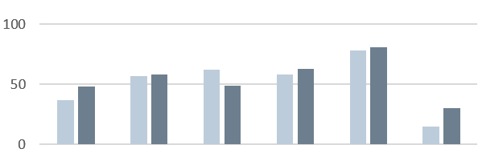
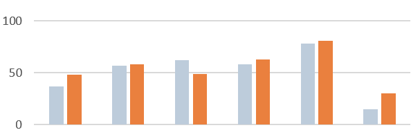
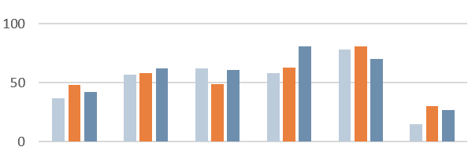
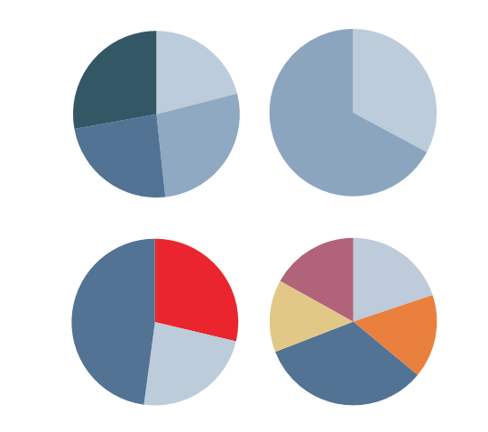

Colors To Set Ourselves Apart
The D.C. Policy Center Color Guide, a part of our styleguide series. This is a working document so expect updates but below are our color choices and a little detail about how to make figures.
Last updated: March 20th, 2017
The DC Policy Center Color Scheme
| #BECCDA | #D16D3B | |
|---|---|---|
| #527394 | #6D7D8C | |
| #E2C886 | #B16379 | |
| #8BCFC5 | #E8272C |
Color Contrast
Avoid red/blue or red/green contrasts; be careful with red in general, as it can impart a negative or alarming meaning to a chart. For accessibility, vary colors by light/dark and by warm/cool tones -- for instance, avoid using gray and a cool-toned color (blue, green, purple) of the same brightness.
  Pie Charts
Pie charts should be used (sparingly) to show how various parts make up a whole. Use gradients to show intensity (dark = "Very satisfied" while light = "somewhat satisfied"), colors for other categories (cities, states) Use red sparingly - i.e. to accent one of two categories. (i.e. D.C. vs rest of U.S.) 
Line Charts and Scatter Plots
Use a line chart when there is a trend to show or continus data, use a scatter plot when there are data points. Use colors that will stand out from the background and axis.